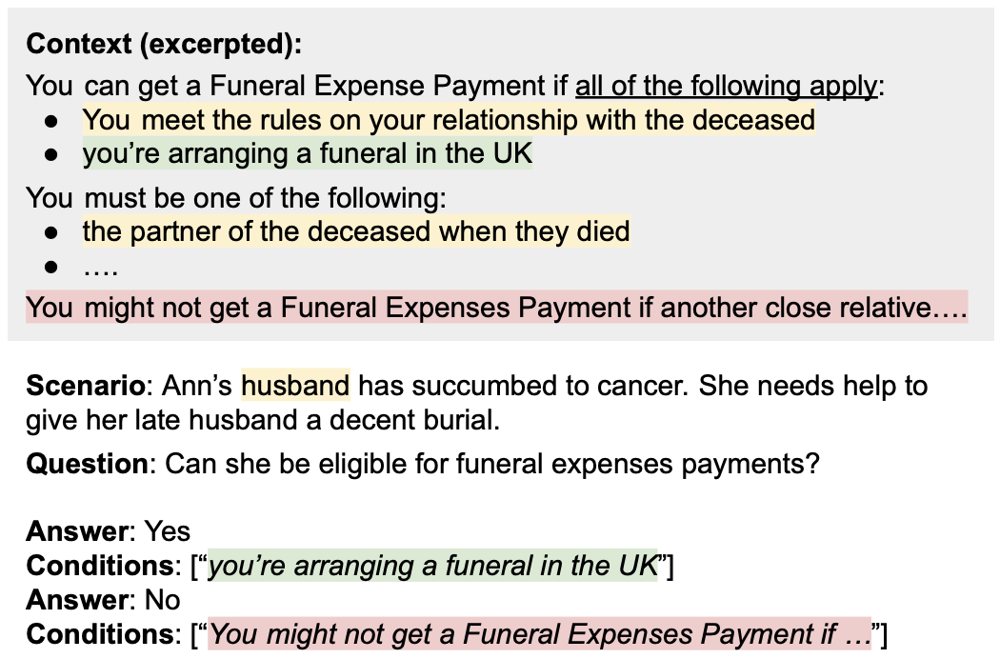

What is ConditionalQA?
ConditionalQA is a question answering dataset featuring complex questions with conditional answers, i.e. answers are only applicable if certain conditions apply. Questions require compositional logical reasoning and are extremely challenging. This dataset is collected by the team at Carnegie Mellon University.
For more details about ConditionalQA, please refer to our paper:
Example
Getting started
ConditionalQA is distributed under a CC BY-SA 4.0 License. The training, development, and test (no answer) sets can be downloaded below. Questions are associated with provided documents. The URL is the unique identifier for a document.
You can evaluate your results with the official evaluation script:
python evaluate.py --pred_file=PRED_FILE --ref_file=REF_FILE
Submission
To evaluate your predictions on the official test sets, please submit your predictions to the Codalab competition.
Please email your Codalab results to us if you would like your model added to the leaderboard. Please include your model name, your organization, a link to your paper, and your open-sourced codes if applicable. The email address is [username]@cs.cmu.edu where the username is "haitians".
Stay connected!
If you have any questions or comments on ConditionalQA, please email the first author of the paper. If you use ConditionalQA in your research, please cite our paper with the following BibTeX entry.
@misc{sun2021conditionalqa,
title={ConditionalQA: A Complex Reading Comprehension Dataset with Conditional Answers},
author={Haitian Sun and William W. Cohen and Ruslan Salakhutdinov},
year={2021},
eprint={2110.06884},
archivePrefix={arXiv},
primaryClass={cs.CL}
}
Thank you and have fun!
| Model | Code | Conditional Questions | All Questions | |||||||
|---|---|---|---|---|---|---|---|---|---|---|
| Answers | w. conditions | Answers | w. conditions | |||||||
| EM | F1 | EM | F1 | EM | F1 | EM | F1 | |||
| 3 Oct 10, 2021 |
FiD FAIR (Izacard et al. 2021) |
45.2 | 49.7 | 4.7 | 5.8 | 44.4 | 50.8 | 35.0 | 40.6 | |
| 2 Oct 10, 2021 |
DocHopper CMU (Sun et al. 2021) |
42.0 | 46.4 | 3.1 | 3.8 | 40.6 | 45.2 | 31.9 | 36.0 | |
| 1 Oct 10, 2021 |
ETC-pipeline Google Research (Ainslie et al. 2020) |
39.4 | 41.8 | 2.5 | 3.4 | 35.6 | 39.8 | 26.9 | 30.8 | |